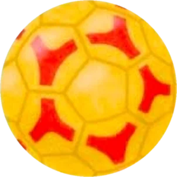

Rukometni klub · Karlovac · od 2018.
Upiši se na rukomet!
Postani dio naše rukometne obitelji! Okupljamo djecu i mlade do 15 godina – od prvih koraka s loptom do natjecanja s najboljima u Hrvatskoj.
- Osnovan
- 2018.
- Članova
- 100+
- Prvaci Hrvatske
- U11

Naš najveći uspjeh
Prvaci Hrvatske U11!
U svibnju 2025. naši su mladi rukometaši na završnom turniru 1. HRL U11 u Poreču osvojili naslov prvaka Hrvatske. U polufinalu su svladali Metalac (26:13), a u finalu Sesvete rezultatom 19:14. Kristijan Ljubanović proglašen je najboljim trenerom turnira.
Pročitaj vijest na hrs.hr- Najuspješniji klub 20. Međunarodnog otvorenog prvenstva Karlovca u mini i super mini rukometu (2022.)
- Prva mjesta na 1. turniru mini rukometa u Svetoj Nedelji (2022.)
- Brojne ekipne i pojedinačne nagrade na turnirima diljem Hrvatske
O klubu
Klub koji raste s djecom
RK Sedmerac osnovan je 2018. godine u Karlovcu s jednim ciljem: djeci približiti rukomet kroz igru, druženje i kvalitetan stručni rad. Klub radi isključivo s djecom i mladima, a danas okuplja više od stotinu mladih rukometaša.
Uz treninge i natjecanja idemo na turnire, organiziramo druženja i tradicionalni ljetni kamp na kraju sezone. Ponosni smo na našu djecu, ali i na roditelje – oni su važan dio naše rukometne obitelji.
-
Rukometno sutra
Uz potporu Ministarstva turizma i sporta proveli smo program rukometnih radionica za učenike od 1. do 4. razreda u osnovnim školama Karlovca i okolice.
-
Ljetni kamp
Više od 50 djece i njihovi treneri na kraju sezone zajedno odlaze na kamp: sport, igre na vodi, radionice i puno smijeha.
-
Stručni treneri
Treninge vode stručno osposobljeni treneri koji znaju kako s djecom raditi strpljivo, sigurno i uz puno motivacije.
-
Roditelji uz nas
Roditelji pomažu na turnirima, putovanjima i u životu kluba. Zajedno stvaramo ozračje u kojem se djeca osjećaju dobrodošlo.
Za roditelje
Zašto baš rukomet?
-
Timski duh
Uči suradnji i poštivanju suigrača i protivnika – i kako zajedno pobjeđivati i gubiti.
-
Zdravlje i kondicija
Trčanje, skokovi i bacanja razvijaju koordinaciju, brzinu i snagu – kroz igru.
-
Prijateljstva
U dvorani, na turnirima i kampovima nastaju prijateljstva koja traju.
-
Samopouzdanje
Svaki gol, obrana i dobro dodavanje grade samopouzdanje i radne navike.
Treninzi
Kategorije za svaki uzrast
Djecu dijelimo u grupe prema godištu, kako bi svatko trenirao uz vršnjake i napredovao svojim tempom.
-
Mini
Mini rukomet
Za najmlađe: igra, lopta i osnovne kretnje – rukomet kao zabava.
-
U11
Mlađi uzrast
Prve utakmice i turniri. Naša U11 ekipa okitila se naslovom prvaka Hrvatske 2025.
-
U13
Srednji uzrast
Tehnika, taktika i ligaška natjecanja – rukomet postaje pravi timski izazov.
-
U15
Najstariji
Najstarija kategorija u klubu: ozbiljniji treninzi i natjecanja s najboljima.
Raspored treninga po kategorijama uskoro objavljujemo ovdje. Do tada nas nazovite ili pošaljite e-mail – rado ćemo vam reći kada i gdje trenira grupa za vaše dijete.
Galerija
Naša rukometna obitelj
-

Slavlje s navijačima -

Veselje pod golom -

Zajedno smo jači -

Medalje i pehari s turnira
Još fotografija i novosti pratite na našoj Facebook stranici.
Upisi su otvoreni
Kako se upisati?
Predznanje nije potrebno – dovoljna je volja za igrom.
-
Javite nam se
Nazovite nas, pošaljite e-mail ili poruku na Facebooku. Recite nam ime i godište djeteta.
-
Dođite na probni trening
Dogovorit ćemo termin u grupi prema godištu. Dijete upoznaje trenera i novu ekipu.
-
Postanite dio ekipe
Ako se djetetu svidi – a hoće! – dobrodošli u rukometnu obitelj Sedmerca.
Što ponijeti na prvi trening?
- Sportsku odjeću (majicu i kratke hlače)
- Čiste tenisice za dvoranu
- Bočicu vode
- Puno dobre volje!
Upiši dijete već danas
Pošaljite nam upit – javit ćemo vam se s terminom probnog treninga.
Kontakt
Javite nam se
- Telefon098 797 760
- E-mailsedmerac.karlovac@gmail.com
- FacebookRK Sedmerac Karlovac
-
LokacijaKarlovac, Hrvatska